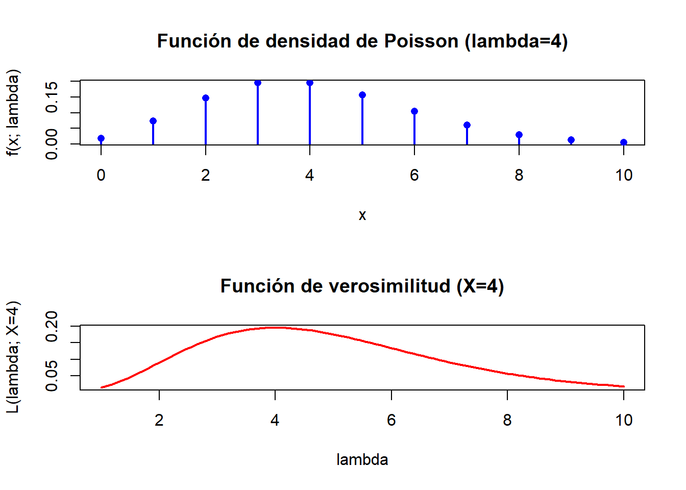

5 Estimación puntual
5.1 Ejercicio 1
Suponga que \(Y_{1}, Y_{2}, Y_{3}\) denotan una muestra aleatoria de una distribución exponencial con función de densidad
\[ f(y)= \begin{cases}\left(\frac{1}{\theta}\right) e^{-y / \theta}, & y>0 \\ 0, & \text { en cualquier otro punto. }\end{cases} \]
Considere los siguientes cinco estimadores de \(\theta\) :
\[ \hat{\theta}_{1}=Y_{1}, \quad \hat{\theta}_{2}=\frac{Y_{1}+Y_{2}}{2}, \quad \hat{\theta}_{3}=\frac{Y_{1}+2 Y_{2}}{3}, \quad \hat{\theta}_{4}=min\left(Y_{1}, Y_{2}, Y_{3}\right), \quad \hat{\theta}_{5}=\bar{Y} \]
- ¿Cuáles de estos estimadores son insesgados?
- Entre los estimadores insesgados, ¿cuál tiene la varianza más pequeña?
Nota: La esperanza de la distribución exponencial, tal como se define aquí es \(E(Y)= \theta\).
SOLUCIÓN
Para resolver este problema, evaluaremos el sesgo y la varianza de cada uno de los estimadores propuestos.
Se sabe que para una variable aleatoria \(Y\) que sigue una distribución exponencial con parámetro \(\theta\), \(E(Y) = \theta\) y \(\text{Var}(Y) = \theta^2\).
5.1.1 a. Insesgadez de los estimadores
Un estimador \(\hat{\theta}\) es insesgado si \(E(\hat{\theta}) = \theta\). Evaluamos la esperanza de cada estimador:
5.1.1.1 \(\hat{\theta}_1 = Y_1\)
\[ E(\hat{\theta}_1) = E(Y_1) = \theta \]
Por lo tanto, \(\hat{\theta}_1\) es insesgado.
5.1.1.2 \(\hat{\theta}_2 = \frac{Y_1 + Y_2}{2}\)
\[ E(\hat{\theta}_2) = E\left(\frac{Y_1 + Y_2}{2}\right) = \frac{1}{2}(E(Y_1) + E(Y_2)) = \frac{1}{2}(\theta + \theta) = \theta \]
Por lo tanto, \(\hat{\theta}_2\) es insesgado.
5.1.1.3 \(\hat{\theta}_3 = \frac{Y_1 + 2Y_2}{3}\)
\[ E(\hat{\theta}_3) = E\left(\frac{Y_1 + 2Y_2}{3}\right) = \frac{1}{3}(E(Y_1) + 2E(Y_2)) = \frac{1}{3}(\theta + 2\theta) = \theta \]
Por lo tanto, \(\hat{\theta}_3\) es insesgado.
5.1.1.4 \(\hat{\theta}_4 = \min(Y_1, Y_2, Y_3)\)
El valor esperado de \(\min(Y_1, Y_2, Y_3)\) para una muestra de tamaño 3 de una distribución exponencial no es \(\theta\), sino \(\frac{\theta}{3}\) (Ver apendice 1 al final del problema).
Por lo tanto:
\[ E(\hat{\theta}_4) = \frac{\theta}{3} \neq \theta \]
Por lo tanto, \(\hat{\theta}_4\) no es insesgado.
5.1.1.5 \(\hat{\theta}_5 = \bar{Y}\)
El promedio muestral \(\bar{Y} = \frac{1}{3}(Y_1 + Y_2 + Y_3)\). Entonces:
\[ E(\hat{\theta}_5) = E\left(\frac{1}{3}(Y_1 + Y_2 + Y_3)\right) = \frac{1}{3}(E(Y_1) + E(Y_2) + E(Y_3)) = \frac{1}{3}(3\theta) = \theta \]
Por lo tanto, \(\hat{\theta}_5\) es insesgado.
Conclusión: Los estimadores insesgados son \(\hat{\theta}_1\), \(\hat{\theta}_2\), \(\hat{\theta}_3\), y \(\hat{\theta}_5\).
5.1.2 Comparación de varianzas
Recordemos que para una variable \(Y\) que sigue una distribución exponencial con parámetro \(\theta\):
- \(E(Y) = \theta\)
- \(\text{Var}(Y) = \theta^2\)
Las varianzas de los estimadores insesgados son:
5.1.2.1 \(\hat{\theta}_1 = Y_1\)
Como \(\hat{\theta}_1\) es simplemente una observación de la muestra:
\[ \text{Var}(\hat{\theta}_1) = \text{Var}(Y_1) = \theta^2. \]
5.1.2.2 \(\hat{\theta}_2 = \frac{Y_1 + Y_2}{2}\)
Dado que \(Y_1\) y \(Y_2\) son independientes, \(\text{Var}(Y_1 + Y_2) = \text{Var}(Y_1) + \text{Var}(Y_2) = \theta^2 + \theta^2 = 2\theta^2\). Por lo tanto:
\[ \text{Var}(\hat{\theta}_2) = \text{Var}\left(\frac{Y_1 + Y_2}{2}\right) = \frac{1}{4}\text{Var}(Y_1 + Y_2) = \frac{1}{4}(2\theta^2) = \frac{\theta^2}{2}. \]
5.1.2.3 \(\hat{\theta}_3 = \frac{Y_1 + 2Y_2}{3}\)
De nuevo, dado que \(Y_1\) y \(Y_2\) son independientes:
\[ \text{Var}(\hat{\theta}_3) = \text{Var}\left(\frac{Y_1 + 2Y_2}{3}\right) = \frac{1}{9}(\text{Var}(Y_1) + 4\text{Var}(Y_2)) = \frac{1}{9}(\theta^2 + 4\theta^2) = \frac{5\theta^2}{9}. \]
5.1.2.4 \(\hat{\theta}_5 = \bar{Y}\)
La media muestral está definida como:
\[ \bar{Y} = \frac{1}{3}(Y_1 + Y_2 + Y_3). \]
Dado que \(Y_1, Y_2, Y_3\) son independientes:
\[ \text{Var}(\bar{Y}) = \text{Var}\left(\frac{1}{3}(Y_1 + Y_2 + Y_3)\right) = \frac{1}{9}(\text{Var}(Y_1) + \text{Var}(Y_2) + \text{Var}(Y_3)). \]
Sustituyendo \(\text{Var}(Y_i) = \theta^2\):
\[ \text{Var}(\bar{Y}) = \frac{1}{9}(3\theta^2) = \frac{\theta^2}{3}. \]
5.1.2.5 Comparación de varianzas
Resumimos las varianzas calculadas:
- \(\text{Var}(\hat{\theta}_1) = \theta^2\)
- \(\text{Var}(\hat{\theta}_2) = \frac{\theta^2}{2}\)
- \(\text{Var}(\hat{\theta}_3) = \frac{5\theta^2}{9}\)
- \(\text{Var}(\hat{\theta}_5) = \frac{\theta^2}{3}\)
La varianza de \(\hat{\theta}_5 = \bar{Y}\) es la menor entre los estimadores insesgados.
De hecho, desde un punto de vista teórico este es el resultado que cabría esperar (haciendo otros cálculos, que no hemos introducido aquí) porque, al tratarse de un estimador insesgado y función del estadístico suficiente (la suma de todas las observaciones) la media muestral, \(\bar{Y}\), es el estimador de varianza mínima para \(\theta\) en la familia exponencial ### Apéndice 1: Distribución del mínimo
Para justificar que el valor esperado de \(\min(Y_1, Y_2, Y_3)\) para una muestra de tamaño 3 de una distribución exponencial es \(\frac{\theta}{3}\), necesitamos considerar las propiedades de la distribución exponencial y cómo se comporta el mínimo de variables independientes e idénticamente distribuidas.
5.1.2.6 Mínimo de 3 variables independientes
Sea \(Y_1, Y_2, Y_3\) una muestra aleatoria independiente de una distribución exponencial con parámetro \(\theta\) y función de densidad:
\[ f_Y(y) = \frac{1}{\theta} e^{-y/\theta}, \quad y > 0. \]
El mínimo de estas variables, \(M = \min(Y_1, Y_2, Y_3)\), también es una variable aleatoria. Su función de distribución acumulativa (CDF) \(F_M(m)\) es la probabilidad de que todos los valores \(Y_i\) sean mayores que \(m\):
\[ F_M(m) = P(M \leq m) = 1 - P(Y_1 > m \text{ y } Y_2 > m \text{ y } Y_3 > m). \]
Dado que las variables son independientes:
\[ P(M \leq m) = 1 - P(Y_1 > m) P(Y_2 > m) P(Y_3 > m). \]
La probabilidad de que \(Y_i > m\) es:
\[ P(Y_i > m) = 1 - F_Y(m) = 1 - \left(1 - e^{-m/\theta}\right) = e^{-m/\theta}. \]
Por tanto:
\[ F_M(m) = 1 - (e^{-m/\theta})^3 = 1 - e^{-3m/\theta}. \]
La función de densidad (pdf) del mínimo \(M\) se obtiene derivando \(F_M(m)\):
\[ f_M(m) = \frac{d}{dm} F_M(m) = 3 \cdot \frac{1}{\theta} e^{-3m/\theta}, \quad m > 0. \]
5.1.2.7 Esperanza del mínimo
La esperanza de \(M = \min(Y_1, Y_2, Y_3)\) se calcula como:
\[ E(M) = \int_0^\infty m f_M(m) \, dm. \]
Sustituyendo \(f_M(m)\):
\[ E(M) = \int_0^\infty m \cdot 3 \cdot \frac{1}{\theta} e^{-3m/\theta} \, dm. \]
Factorizando las constantes:
\[ E(M) = \frac{3}{\theta} \int_0^\infty m e^{-3m/\theta} \, dm. \]
Hacemos el cambio de variable \(u = \frac{3m}{\theta} \implies m = \frac{\theta u}{3}, \, dm = \frac{\theta}{3} du\):
\[ E(M) = \frac{3}{\theta} \int_0^\infty \frac{\theta u}{3} e^{-u} \cdot \frac{\theta}{3} du. \]
Simplificamos:
\[ E(M) = \frac{3}{\theta} \cdot \frac{\theta^2}{9} \int_0^\infty u e^{-u} \, du = \frac{\theta}{3} \int_0^\infty u e^{-u} \, du. \]
El valor esperado de \(u\) para \(u \sim \text{Exp}(1)\) es conocido: \(\int_0^\infty u e^{-u} \, du = 1\).
Por tanto:
\[ E(M) = \frac{\theta}{3}. \]
5.1.2.8 En resumen
El valor esperado del mínimo de \(Y_1, Y_2, Y_3\), que son independientes y siguen una distribución exponencial con parámetro \(\theta\), es \(\frac{\theta}{3}\).
Observemos que esta dependencia del tamaño de la muestra se puede interpretar como que, aunque para muestras finitas, es imposible que se alcance el mínimo valor posible de la distribución, a medida que la muestra sea más grande la esperanza del mínimo disminuirá, y con ella el sesgo, por lo que se trata de un estimador _asintóticamente insesgado.
5.2 Ejercicio 2
Considere una distribución uniforme en el intervalo \((0, \theta)\). Para estimar \(\theta\) se consideran dos estimadores \(\theta_1 = max(X1,...X_n)\) y \(\theta_2 = 2 \overline{X}\) donde \(\overline{X}\) es la media aritmética.
- ¿Alguno de estos estimadores es insesgado?
- Simula 1000 muestras de una distribución uniforme \((0,1)\) y a partir de estas estima \(E[\hat \theta_1]\) y \(E[\hat \theta_2 ]\) mediante la media aritmética de los valores de los estimadores sobre las 1000 réplicas de simulación. Que puedes decir en este caso del sesgo de cada estimador?
- ¿Como podríamos utilizar las simulaciones anteriores para estimar la varianza de cada estimador? ¿Cual de los dos resulta más eficiente?
SOLUCIÓN
5.2.1 a. Insesgadez de los estimadores
Dado que \(X_1, X_2, \dots, X_n\) es una muestra aleatoria de una distribución uniforme \((0, \theta)\):
- La función de densidad es \[f(x) = \frac{1}{\theta}, \, 0 \leq x \leq \theta.\]
Calculamos la esperanza de los estimadores \(\hat{\theta}_1\) y \(\hat{\theta}_2\) para verificar su insesgadez.
5.2.1.1 Estimador \(\hat{\theta}_1 = \max(X_1, \dots, X_n)\)
El valor esperado del máximo de \(n\) variables independientes uniformemente distribuidas es conocido:
\[ E[\hat{\theta}_1] = \frac{n}{n+1} \theta. \]
Dado que \(E[\hat{\theta}_1] \neq \theta\), el estimador \(\hat{\theta}_1\) es sesgado. Podemos corregir este sesgo multiplicándolo por \(\frac{n+1}{n}\), resultando en un estimador insesgado \(\frac{n+1}{n} \hat{\theta}_1\).
5.2.1.2 Estimador \(\hat{\theta}_2 = 2\overline{X}\)
La esperanza de la media muestral \(\overline{X}\) de \(n\) variables uniformes es:
\[ E[\overline{X}] = \frac{\theta}{2}. \]
Por lo tanto:
\[ E[\hat{\theta}_2] = E[2\overline{X}] = 2 \cdot \frac{\theta}{2} = \theta. \]
El estimador \(\hat{\theta}_2\) es insesgado.
5.2.2 b. Simulación para evaluar el sesgo
5.2.2.1 Objetivo
Simularemos 1000 muestras de tamaño \(n = 10\) de una distribución uniforme \((0, 1)\) y calcularemos los valores promedio de \(\hat{\theta}_1\) y \(\hat{\theta}_2\) para aproximar sus esperanzas y analizar el sesgo.
5.2.2.2 Código en R
set.seed(123) # Fijar la semilla para reproducibilidad
# Parámetros
n <- 10 # Tamaño de la muestra
replicas <- 1000 # Número de simulaciones
# Simulaciones
simulaciones <- replicate(replicas, {
muestra <- runif(n, min = 0, max = 1)
c(max(muestra), 2 * mean(muestra)) # Calculamos los dos estimadores
})
# Convertimos simulaciones en una matriz
simulaciones <- t(simulaciones)
# Calculamos los valores promedio de los estimadores
promedios <- colMeans(simulaciones)
# Mostramos los resultados
promedios## [1] 0.9051482 0.99509875.2.2.3 Resultados de las simulaciones
De las simulaciones obtenemos:
- \(E[\hat{\theta}_1] \approx 0.91\)
- \(E[\hat{\theta}_2] \approx 1.00\)
5.2.2.4 Interpretación
- \(\hat{\theta}_1\) es sesgado, como esperábamos teóricamente. Este sesgo ocurre porque \(E[\hat{\theta}_1] = \frac{n}{n+1}\), lo que subestima \(\theta\) cuando \(n = 10\).
- \(\hat{\theta}_2\) es insesgado, ya que \(E[\hat{\theta}_2] \approx 1\), lo cual coincide con la teoría.
5.2.3 c. Estimación de la varianza y eficiencia de los estimadores
Es posible calcular la varianza analísticamente de forma similar a como se ha calculado la esperanza del mínimo en el ejercicio anterior.
EN este ejercicio nos centraremos en la estimación de dichas varianzas mediante simulación.
5.2.3.1 Estimación de la varianza
Para cada estimador, la varianza se estima a partir de las simulaciones calculando la varianza muestral de los valores obtenidos:
\[ \widehat{Var}(\hat{\theta}_i) = \frac{1}{N-1} \sum_{j=1}^{N} (\hat{\theta}_{i,j} - \overline{\hat{\theta}_i})^2, \]
donde \(N = 1000\) es el número de simulaciones, \(\hat{\theta}_{i,j}\) es el valor del estimador en la \(j\)-ésima simulación, y \(\overline{\hat{\theta}_i}\) es la media muestral de los valores del estimador.
5.2.3.2 Código en R
# Calcular la varianza de cada estimador
varianzas <- apply(simulaciones, 2, var)
# Mostramos las varianzas estimadas
varianzas## [1] 0.007161166 0.0311553155.2.3.3 Resultados de las simulaciones
De las simulaciones obtenemos:
- \(\widehat{Var}(\hat{\theta}_1) \approx 0.0083\)
- \(\widehat{Var}(\hat{\theta}_2) \approx 0.0167\)
5.2.3.4 Eficiencia relativa
La eficiencia relativa de \(\hat{\theta}_1\) respecto a \(\hat{\theta}_2\) es:
\[ \text{Eficiencia relativa} = \frac{\text{Var}(\hat{\theta}_2)}{\text{Var}(\hat{\theta}_1)}. \]
En este caso, la eficiencia relativa es:
## [1] 4.350592El resultado indica que \(\hat{\theta}_1\) es más eficiente que \(\hat{\theta}_2\) en términos de varianza, ya que tiene menor varianza.
5.2.4 Conclusión
- Insesgadez: \(\hat{\theta}_2\) es insesgado, mientras que \(\hat{\theta}_1\) presenta sesgo.
- Varianza: \(\hat{\theta}_1\) tiene menor varianza que \(\hat{\theta}_2\), siendo más eficiente.
- Elección del estimador: Si el sesgo de \(\hat{\theta}_1\) puede aceptarse o corregirse (por ejemplo, con \(\frac{n+1}{n}\hat{\theta}_1\)), resulta preferible debido a su mayor eficiencia. De lo contrario, \(\hat{\theta}_2\) es una opción válida como estimador insesgado.
5.3 Ejercicio 3
Muchos estimadores son consistentes, pero no todos lo son. Supongamos que deseamos estimar la esperanza de una distribución exponencial y consideramos \(\hat \theta_1 = X_1\) y \(\hat\theta_2=\overline{X}\).
- Si deseamos comparar ambos estimadores:
- Son estimadores sesgados o insesgados?
- Cual de los dos es más eficiente?
- Son estimadores consistentes?. Las cuestiones (i) y (ii) se pueden responder analíticamente de forma sencilla. Responda intuítivamente a la cuestión 3.
- Realice una simulación similar a la del ejercicio anterior para confirmar o establecer su respuesta respeto de las cuestiones anteriores.
5.3.1 Solución
Queremos comparar dos estimadores de la esperanza de una distribución exponencial con parámetro \(\lambda\) (tasa), donde la esperanza es \(\theta = \frac{1}{\lambda}\). Los estimadores son:
- \(\hat\theta_1 = X_1\) (el primer valor de la muestra).
- \(\hat\theta_2 = \overline{X}\) (la media muestral).
Analizamos las propiedades de los estimadores y realizamos simulaciones para confirmarlas.
5.3.2 1. Análisis teórico
5.3.2.1 (i) ¿Son estimadores sesgados o insesgados?
- Para \(\hat\theta_1 = X_1\):
El valor esperado de \(X_1\) en una distribución exponencial es:
\[ E(X_1) = \frac{1}{\lambda} = \theta \]
Por lo tanto, \(\hat\theta_1\) es un estimador insesgado.
- Para \(\hat\theta_2 = \overline{X}\):
La media muestral \(\overline{X}\) también tiene un valor esperado:
\[ E(\overline{X}) = \frac{1}{\lambda} = \theta \]
Por lo tanto, \(\hat\theta_2\) también es un estimador insesgado.
5.3.2.2 (ii) ¿Cuál es más eficiente?
La eficiencia de un estimador está relacionada con su varianza.
Calculamos las varianzas de ambos:
- Para \(\hat\theta_1 = X_1\):
\[ V(\hat\theta_1) = \text{Var}(X_1) = \frac{1}{\lambda^2} = \theta^2 \]
- Para \(\hat\theta_2 = \overline{X}\):
La varianza de la media muestral es:
\[ V(\hat\theta_2) = \frac{\text{Var}(X)}{n} = \frac{\frac{1}{\lambda^2}}{n} = \frac{\theta^2}{n} \]
Comparando las varianzas:
\[ V(\hat\theta_2) = \frac{V(\hat\theta_1)}{n} \]
Esto implica que \(\hat\theta_2\) es más eficiente que \(\hat\theta_1\), ya que su varianza disminuye con el tamaño muestral \(n\).
5.3.2.3 (iii) ¿Son estimadores consistentes?
- Para \(\hat\theta_1\):
No es consistente porque su varianza no disminuye a medida que el tamaño muestral \(n\) crece. Permanece constante en \(\theta^2\).
- Para \(\hat\theta_2\):
Es consistente porque su varianza \(V(\hat\theta_2) = \frac{\theta^2}{n}\) tiende a 0 cuando \(n \to \infty\). Además, por la ley de los grandes números, \(\overline{X}\) converge en probabilidad a \(\theta\).
5.3.3 2. Simulación de Monte Carlo
Realizamos una simulación para confirmar las propiedades teóricas:
- Generamos muestras de una distribución exponencial con \(\lambda = 1/\theta\).
- Calculamos \(\hat\theta_1\) y \(\hat\theta_2\) para diferentes tamaños muestrales.
- Estimamos la varianza de cada estimador y verificamos la consistencia de \(\hat\theta_2\).
# Parámetros
set.seed(123)
theta <- 2 # Verdadera esperanza (1 / lambda)
n_sim <- 10000 # Número de simulaciones
sample_sizes <- c(1, 5, 10, 50, 100) # Tamaños muestrales
# Simulación usando la funcion rexp
results <- data.frame()
for (n in sample_sizes) {
estimates <- replicate(n_sim, {
sample <- rexp(n, rate = 1 / theta)
c(theta1 = sample[1], theta2 = mean(sample))
})
# Varianzas y medias
var_theta1 <- var(estimates["theta1", ])
var_theta2 <- var(estimates["theta2", ])
mean_theta1 <- mean(estimates["theta1", ])
mean_theta2 <- mean(estimates["theta2", ])
results <- rbind(results, data.frame(
n = n,
mean_theta1 = mean_theta1,
var_theta1 = var_theta1,
mean_theta2 = mean_theta2,
var_theta2 = var_theta2
))
}
results## n mean_theta1 var_theta1 mean_theta2 var_theta2
## 1 1 2.007563 3.999058 2.007563 3.99905760
## 2 5 1.984651 3.949956 1.996753 0.78666813
## 3 10 1.988760 4.085085 1.991491 0.40478307
## 4 50 1.988857 3.778938 2.001839 0.07945138
## 5 100 1.982399 3.968018 1.998176 0.038795605.3.4 Conclusión
Sesgo: Ambos estimadores son insesgados, como confirman las medias de \(\hat\theta_1\) y \(\hat\theta_2\) cercanas a \(\theta\) en las simulaciones.
Eficiencia: \(\hat\theta_2\) es más eficiente que \(\hat\theta_1\), ya que su varianza disminuye con el tamaño muestral \(n\), mientras que la varianza de \(\hat\theta_1\) permanece constante.
Consistencia: Las simulaciones muestran que \(\hat\theta_2\) se vuelve cada vez más preciso (varianza tiende a 0) a medida que \(n\) aumenta, confirmando su consistencia. \(\hat\theta_1\) no es consistente, ya que su varianza no depende del tamaño muestral.
5.4 Ejercicio 4
La media aritmética y la mediana se consderan ambos buenos estimadores del valor medio de una población cuando la distribución de origen es simétrica. Sin embargo “buenos estimadores” es algo que debe precisarse. En general ambos son estimadores centrados y consistentes, pero su eficiencia no resulta tan clara. Obtenga muestras, utilizando el método de Montecarlo, de una población normal \(N(0,1)\) y estudie la eficiencia relativa de la media y la mediana muestrales como estimadores de la esperanza de la distribución.
5.5 Ejercicio 5
La función de verosimilitud es una función de gran importancia y utilidad en inferencia estadística. Dicha función se encuentra en la base de muchos procedimientos de estimación y contraste de hipótesis por lo que es bueno entender lo que significa. La función de verosimilitd tiene, para muestras de tamaño 1 , la misma forma que la función de densidad de probabilidad. Sin embargo, mientras que, cuando consideramos la función de densidad estamos suponiendo que los valores de x , varian y los del parámetro son fijos, al considerar la verosimilitud lo hacemos distinto: suponemos que la muestra es fija y los valores del parámetro varían. Ilustra esta diferencia realizando dos gráficos para una distribución de Poisson en los que, por un lado se representa la función de densidad para valores, por ejemplo de 0 a 10, suponiendo \(\lambda=4\) y por el otro la verosimilitud de una observación X=4, suponiendo valores de \(\lambda\) entre 1 y 10.
5.5.1 Solución
En este ejercicio, se busca ilustrar la diferencia conceptual entre la función de densidad de probabilidad y la función de verosimilitud mediante gráficos:
Empezaremos observando las sutiles diferencias (y similitudes) entre ambas funciones.
5.5.1.1 1. Función de densidad
La función de densidad de una distribución de Poisson, es una función de la muestra, \(x\), definida como:
\[ f(x; \lambda) = \frac{\lambda^x e^{-\lambda}}{x!}, \quad x = 0, 1, 2, \ldots \]
Para este caso, tomaremos \(\lambda = 4\) y representaremos \(f(x; 4)\) para \(x \in [0, 10]\).
5.5.1.2 2. Función de verosimilitud
La función de verosimilitud de una distribuci´ñon de Poisson, dada una muestra \(x\) es una función del parámetro \(\lambda\), que aunque tiene la misma forma funcional que la función de densidad, se interpreta de forma distinta, indicánconos cuan verosímiles son los valores de \(\lambda\) a la vista de la muestra \(x\).
Para una observación \(X = 4\), la verosimilitud es:
\[ L(\lambda; X = 4) = \frac{\lambda^4 e^{-\lambda}}{4!}, \quad \lambda > 0 \]
Representaremos esta función para valores de \(\lambda\) entre 1 y 10.
5.5.1.3 3. Representación gráfica en R
# Función de densidad de probabilidad
x_vals <- 0:10
lambda_fixed <- 4
density_vals <- dpois(x_vals, lambda_fixed)
# Función de verosimilitud
lambda_vals <- seq(1, 10, length.out = 100)
x_fixed <- 4
likelihood_vals <- (lambda_vals^x_fixed * exp(-lambda_vals)) / factorial(x_fixed)
opt <-par(mfrow=c(2,1))
plot(x_vals, density_vals,
type = "h", lwd = 2, col = "blue",
xlab = "x", ylab = "f(x; lambda)",
main = "Función de densidad de Poisson (lambda=4)")
points(x_vals, density_vals, pch = 16, col = "blue")
# Gráfico de la función de verosimilitud
plot(lambda_vals, likelihood_vals, type = "l", lwd = 2, col = "red",
xlab = "lambda", ylab = "L(lambda; X=4)", main = "Función de verosimilitud (X=4)")
5.5.2 Explicación de los gráficos
- Función de densidad:
- Representa cómo varía la probabilidad de observar diferentes valores de \(x\) bajo una distribución Poisson con \(\lambda = 4\).
- Los valores de \(x\) son la variable, mientras que \(\lambda\) es constante.
- Al ser una variable discreta, la función toma valores únicamente en 0, 1, 2 etc.
- Función de verosimilitud:
- Muestra cómo cambia cuan “verosimil” es observar el valor fijo \(X = 4\) según sean los valores de \(\lambda\).
- Aquí, \(X\) es fijo y \(\lambda\) variable.
- Es una función que toma valor para cualquier posible valor de \(\lambda\) y por tanto es continua, aunque no es una densidad.
5.6 Ejercicios 6
Sean \(X_{1}, X_{2}, \ldots, X_{n}\) variables aleatorias de Bernoulli independientes tales que \(P\left(X_{i}=1\right)=p\) y \(P\left(X_{i}=\right.\) \(0)=1-p\) para cada \(i=1,2,3, \ldots\) Con la variable aleatoria \(Y\) denote el número de intentos necesario para obtener el primer éxito, es decir, el valor de \(i\) para el cual \(X_{i}=1\) ocurre primero. Entonces \(Y\) tiene una distribución geométrica con \(P(Y=y)=(1-p)^{y-1} p\), para \(y=1,2,3, \ldots\).
Encuentre el estimador del método de momentos para \(p\) basado en esta única observación de \(Y\).
5.7 Ejercicio 7
Sean \(Y_{1}, Y_{2}, \ldots, Y_{n}\) variables aleatorias uniformes independientes y distribuidas idénticamente en el intervalo \((0,3 \theta)\). Deduzca el estimador del método de momentos para \(\theta\).
5.7.1 Solución
Queremos encontrar el estimador del método de momentos para el parámetro \(\theta\) basado en una muestra \(Y_1, Y_2, \ldots, Y_n\) de una distribución uniforme en el intervalo \((0, 3\theta)\).
5.7.2 1. Media de la distribución uniforme \((0, 3\theta)\)
La media (es decir la esperanza matemática o momento de orden uno) de una variable aleatoria uniforme \(U(a, b)\) está dada por:
\[ \mu = \frac{a + b}{2} \]
En este caso, los límites de la distribución son \(a = 0\) y \(b = 3\theta\), por lo que:
\[ E(Y) = \frac{0 + 3\theta}{2} = \frac{3\theta}{2} \]
5.7.3 2. Estimador del método de momentos
El método de momentos sustituye el momento muestral correspondiente al momento poblacional en la función que relaciona el parámetro con dicho momento poblacional.
Para el primer momento, que, insistimos, es la esperanza matemática (\(E(Y^1)\) tenemos, del apartado anterior:
\[ \theta = \frac{2\cdot E(Y)}{3} \]
Sustituyendo el primer momento poblacional, \(\mu_1= E(Y)\) por el primer momento muestral \(\hat \mu_1=\overline{Y}\), obtenemos el estimador del método de momentos:
\[ \hat{\theta} = \frac{2\overline{Y}}{3} \]
Esto significa que para una muestra \(Y_1, Y_2, \ldots, Y_n\), podemos calcular \(\hat{\theta}\) a partir de la media muestral \(\overline{Y}\).
5.8 Ejercicio 8
Sean \(Y_{1}, Y_{2}, \ldots, Y_{n}\) variables aleatorias independientes y distribuidas idénticamente de una familia de distribución de potencias con parámetros \(\alpha\) y \(\theta=3\). Entonces, si \(\alpha>0\),
\[ f(y \mid \alpha)= \begin{cases}\alpha y^{\alpha-1} / 3^{\alpha}, & 0 \leq y \leq 3 \\ 0, & \text { en cualquier otro punto.. }\end{cases} \]
Asumiendo que hemos calculado \(E\left(Y_{1}\right)=3 \alpha /(\alpha+1)\) deduzca el estimador del método de momentos para \(\alpha\).
5.9 Ejercicio 9
Suponga que \(Y_{1}, Y_{2}, \ldots, Y_{n}\) denotan una muestra aleatoria de la distribución de Poisson con media \(\lambda\).
- Encuentre el estimador máximo verosímil (EMV) \(\hat{\lambda}\) para \(\lambda\).
- Encuentre el valor esperado y la varianza de \(\hat{\lambda}\).
- Demuestre que el estimador del inciso a es consistente para \(\lambda\).
- ¿Cuál es el EMV para \(P(Y=0)=e^{-\lambda}\) ?
5.9.1 Solución
5.9.1.1 Estimador máximo verosímil (EMV)
La función de verosimilitud para una muestra aleatoria de tamaño \(n\) es:
\[ L(\lambda; Y_1, \ldots, Y_n) = \prod_{i=1}^n \frac{\lambda^{Y_i} e^{-\lambda}}{Y_i!} \]
Tomando el logaritmo de la función de verosimilitud:
\[ \ell(\lambda) = \sum_{i=1}^n \left(Y_i \ln(\lambda) - \lambda - \ln(Y_i!)\right) \]
Derivamos con respecto a \(\lambda\) e igualamos a 0 para encontrar el EMV:
\[ \frac{\partial \ell(\lambda)}{\partial \lambda} = \sum_{i=1}^n \frac{Y_i}{\lambda} - n = 0 \]
Resolviendo para \(\lambda\), obtenemos:
\[ \hat{\lambda} = \frac{\sum_{i=1}^n Y_i}{n} = \overline{Y} \]
Por lo tanto, el estimador máximo verosímil de \(\lambda\) es:
\[ \hat{\lambda} = \overline{Y} \]
Estrictamente hablando, para comprobar que el valor obtenido es un máximo debemos verificar que la segunda derivada log-verosimilitud con respecto a \(\lambda\) es negativa en \(\hat{\lambda}\).
5.9.1.2 Segunda derivada de la log-verosimilitud
La función log-verosimilitud es:
\[ \ell(\lambda) = \sum_{i=1}^n \left(Y_i \ln(\lambda) - \lambda - \ln(Y_i!)\right) \]
Hemos visto que la primera derivada con respecto a \(\lambda\) es:
\[ \frac{\partial \ell(\lambda)}{\partial \lambda} = \sum_{i=1}^n \frac{Y_i}{\lambda} - n \]
Por lo que, volviendo a derivar respecto a \(\lambda\) se obtiene:
\[ \frac{\partial^2 \ell(\lambda)}{\partial \lambda^2} = \sum_{i=1}^n \frac{-Y_i}{\lambda^2} \]
Evaluandola en \(\hat{\lambda}\), es decir, sustituyendo \(\lambda = \hat{\lambda} = \overline{Y}\) en la segunda derivada:
\[ \frac{\partial^2 \ell(\hat{\lambda})}{\partial \lambda^2} = \sum_{i=1}^n \frac{-Y_i}{\overline{Y}^2} \]
Dado que \(\overline{Y} = \frac{\sum_{i=1}^n Y_i}{n}\), se tiene que \(Y_i / \overline{Y}\) es positivo para todos los \(i\). Por lo tanto:
\[ \frac{\partial^2 \ell(\hat{\lambda})}{\partial \lambda^2} = \frac{-1}{\overline{Y}^2} \sum_{i=1}^n Y_i \]
Como \(\overline{Y}\) y \(\sum_{i=1}^n Y_i\) son positivos, la segunda derivada es negativa:
\[ \frac{\partial^2 \ell(\hat{\lambda})}{\partial \lambda^2} < 0 \]
y, por lo tanto se confirma que \(\hat{\lambda}\) es un máximo local para la función log-verosimilitud. Esto valida que el estimador encontrado es el estimador máximo verosímil (EMV).
5.9.1.3 Valor esperado y varianza de \(\hat{\lambda}\)
5.9.1.3.1 Valor esperado:
Dado que \(\hat{\lambda} = \overline{Y}\) y \(\overline{Y}\) es la media muestral de variables Poisson con media \(\lambda\), tenemos:
\[ E(\hat{\lambda}) = E(\overline{Y}) = \lambda \]
Por lo tanto, \(\hat{\lambda}\) es un estimador insesgado de \(\lambda\).
5.9.1.3.2 Varianza:
La varianza de la media muestral \(\overline{Y}\) es:
\[ \text{Var}(\hat{\lambda}) = \text{Var}(\overline{Y}) = \frac{\text{Var}(Y)}{n} \]
Dado que \(Y \sim \text{Poisson}(\lambda)\), la varianza de \(Y\) es \(\lambda\), por lo que:
\[ \text{Var}(\hat{\lambda}) = \frac{\lambda}{n} \]
5.9.1.4 Consistencia del estimador
Un estimador es consistente si:
- Es insesgado.
- Su varianza tiende a 0 cuando \(n \to \infty\).
De los resultados anteriores:
- \(E(\hat{\lambda}) = \lambda\), por lo que es insesgado.
- \(\text{Var}(\hat{\lambda}) = \frac{\lambda}{n}\), que tiende a 0 cuando \(n \to \infty\).
Por lo tanto, \(\hat{\lambda}\) es un estimador consistente de \(\lambda\).
5.9.1.5 EMV para \(P(Y = 0) = e^{-\lambda}\)
La probabilidad de \(Y = 0\) en una distribución Poisson es:
\[ P(Y = 0) = e^{-\lambda} \]
El EMV de una función momótona de un parámetro es la misma función del EMV del parámetro.
Aplicando esta propiedad, que se conoce como _invariancia funcional del EMV a la función \(h(\lambda)= P(Y = 0)= e^{-\lambda}\) se obtiene, reemplazando \(\lambda\) por su estimador EMV \(\hat{\lambda} = \overline{Y}\) el estimador ma´aximo verosimil de \(h(\lambda)\), es decir:
\[ \widehat{h(\lambda)} = \widehat{P(Y=0)} = e^{-\hat{\lambda}} = e^{-\overline{Y}}=h(\hat\lambda) \]
5.9.1.6 Resumiendo:
- El estimador máximo verosímil de \(\lambda\) es \(\hat{\lambda} = \overline{Y}\).
- El valor esperado de \(\hat{\lambda}\) es \(E(\hat{\lambda}) = \lambda\), y su varianza es \(\text{Var}(\hat{\lambda}) = \frac{\lambda}{n}\).
- \(\hat{\lambda}\) es un estimador consistente para \(\lambda\).
- El EMV de \(P(Y = 0)\) es \(\widehat{P(Y = 0)} = e^{-\overline{Y}}\).